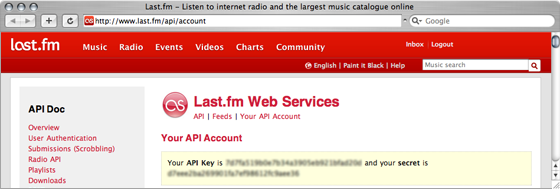
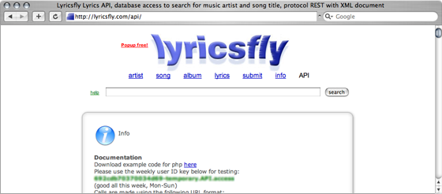
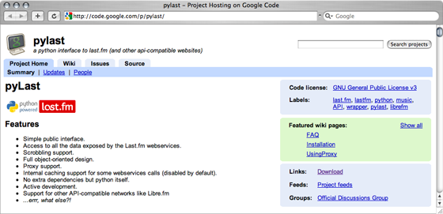
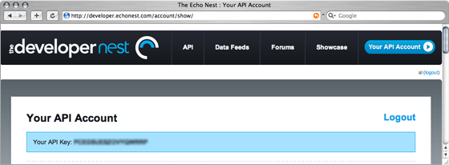
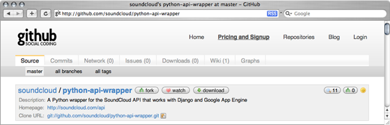
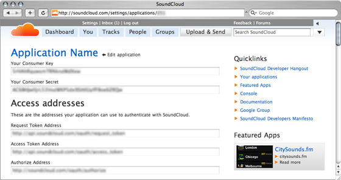
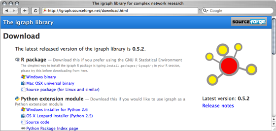
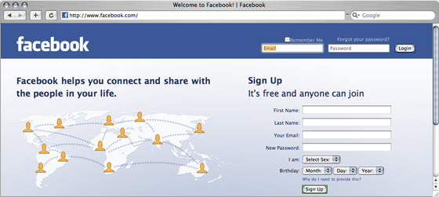

Mining the Social Web for Music-Related Data
A Hands-On Tutorial
Background
This page presents the tutorial by Claudio Baccigalupo and Benjamin Fields that will take place in Kobe (Japan) on October 26th, 2009 as part of the 10th ISMIR conference.
Material
The tutorial will show how to write working pieces of code for relevant music research applications. Participants should bring their own laptops to follow the demonstrations and the examples in real time. All the source code that will be written in the tutorial is included in the package sources.zip that every participants is invited to download. In addition, the slides that will be used during the tutorial are available in a separate package slides.pdf.
Requirements
The examples of the tutorial make use of multiple programming languages and libraries. All the software required can be obtained for free from the Internet, as explained hereafter. The requirements for each example are:
- Evaluating hypotheses: ⇒ Python
- Comparing lyrics by genre: ⇒ Ruby, ⇒ Last.fm API key
- Revealing trends: ⇒ Python, ⇒ Last.fm API key, ⇒ pylast
- Performing audio analysis: ⇒ Ruby, ⇒ Echonest API key
- Capturing social data: ⇒ Python, ⇒ scapi, ⇒ SoundCloud App key, ⇒ igraph for Python
- Collecting feedback: ⇒ Facebook account, ⇒ PHP-equipped web server
- Python (examples 1, 3, 5)
-
This programming language is pre-installed in many Unix systems, including OS X. To test the presence of Python on a computer, open a Terminal console and type:
shell> python --versionIf the command returns an error, then Python is not installed. In this case, download and install Python following the instructions at python.org. Recommended version: 2.6. - Ruby (examples 2, 4)
-
This programming language is pre-installed in recent versions of OS X. To test the presence of Ruby on a computer, open a Terminal console and type:
shell> ruby --versionIf the command returns an error, then Ruby is not installed. In this case, download and install Ruby following the instructions at ruby-lang.org. Recommended version: 1.8.7. - Last.fm API key (examples 2, 3)
-
Last.fm offers access to an immense database of music relationships through a web API. An API key is required, which can be obtained from the page last.fm/api/account.

After the registration, the page shows an API key and a secret code. These strings are to substitute those originally in the source code, by typing the following commands:
shell> cd <SOURCE CODE FOLDER>shell> echo 'lastfm_key = "PASTE API KEY HERE"' > c/lastfm_key.pyshell> echo '$lastfm_key = "PASTE API KEY HERE"' > c/lastfm_key.rb - LyricsFly API key (example 2)
-
LyricsFly offers access to an immense database of music lyrics through a web API.
A permament API key is required, which can be obtained at the page lyricsfly.com/api. The page also displays a temporary key, valid for one week and useful for testing.

The API key (either permanent or temporary) is to substitute that originally present in the source code, by typing the following commands:
shell> cd <SOURCE CODE FOLDER>shell> echo '$lyricsfly_key = "PASTE API KEY HERE"' > c/lyricsfly_key.rb - pylast (example 3)
-
Pylast is a Python wrapper which provides access to Last.fm data hiding the network calls made to Last.fm servers. Pylast is maintained at code.google.com/p/pylast.

Pylast v0.4.15 can be downloaded and installed from the shell console by typing:
shell> wget http://pypi.python.org/packages/source/p/pylast/pylast-0.4.15.tar.gzshell> gunzip < pylast-0.4.15.tar.gz | tar xvf -shell> cd pylast-0.4.15shell> sudo python setup.py install - Echonest API key (example 4)
-
The Echo Nest provides tools to analyse audio by of calls to a web API.
An API key is required, which can be obtained at the page developer.echonest.com/account/show.

After the registration, the page shows an API key which is to substitute the one originally in the source code, by typing:
shell> cd <SOURCE CODE FOLDER>shell> echo '$echonest_key = "PASTE API KEY HERE"' > c/echonest_key.rb - scapi (example 5)
-
scapi is a Python wrapper providing access to SoundCloud data. Its functions hide the network calls that connect to SoundCloud web API.
Source code and documentation of scapi are maintained at github.com/soundcloud/python-api-wrapper.

scapi can be downloaded and installed from the shell console by typing:
shell> git clone git://github.com/soundcloud/python-api-wrapper.gitshell> cd python-api-wrappershell> sudo python setup.py installDownload is done via git, a version control system available at git-scm.com/download. - SoundCloud App key (example 5)
-
SoundCloud provides tools to analyse audio by of calls to a web API.
An Application key can be obtained at the page soundcloud.com/settings/applications/new.

After the registration, the page shows an Application Consumer key, secret and access addresses which are to substitute those originally in the source code, by typing:
shell> cd <SOURCE CODE FOLDER>shell> echo 'import scapi' > c/soundcloud_key.pyshell> echo 'soundcloud_key = "PASTE CONSUMER KEY"' >> c/soundcloud_key.pyshell> echo 'soundcloud_secret = "PASTE CONSUMER SECRET"' >> c/soundcloud_key.pyshell> echo 'scapi.REQUEST_TOKEN_URL = "PASTE REQUEST TOKEN ADDRESS"' >> c/soundcloud_key.pyshell> echo 'scapi.ACCESS_TOKEN_URL = "PASTE ACCESS TOKEN ADDRESS"' >> c/soundcloud_key.pyshell> echo 'scapi.AUTHORIZATION_URL = "PASTE AUTHORIZE ADDRESS"' >> c/soundcloud_key.py - igraph for Python (example 5)
-
igraph is a multi-platform package for creating and manipulating graphs.
Documentation and download links are maintained at igraph.sf.net/download.html.

igraph v0.5.2 can be downloaded and installed from the shell console by typing:
shell> wget http://switch.dl.sf.net/sourceforge/igraph/igraph-0.5.2.tar.gzshell> gunzip < igraph-0.5.2.tar.gz | tar xvf -shell> cd igraph-0.5.2shell> ./configure --prefix=/usr/local; make; sudo make installThe Python interface for igraph v0.5.2 can also be installed by typing:shell> wget http://pypi.python.org/packages/source/p/python-igraph/python-igraph-0.5.tar.gzshell> gunzip < python-igraph-0.5.tar.gz | tar xvf -shell> cd python-igraph-0.5shell> sudo python setup.py install - Facebook account (example 6)
- Facebook is a social network where developers can deploy third-party applications. A Facebook account is required, which can be created at the page facebook.com. 
- PHP-equipped web server (example 6)
-
Facebook application are commonly written in PHP and hosted on external servers.
Most web servers include PHP by default; this can be tested by typing:
shell> php --versionIf PHP is not available, it can be installed as detailed at php.net/downloads.php. An alternative strategy is to look for web hosting companies offering free PHP hosting plans with FTP access. Two valid options are LeadHoster or 100 WebSpace.
About the tutorial
The social web is a useful resource for those conducting research in music informatics. Yet there exists no “standard” way to integrate web-based data with more common signal-based music informatics methods.
This tutorial goes through the entire process of retrieving and leveraging data from the social web for MIR tasks. This is done through the use of hands-on examples intended to introduce the larger ISMIR community to web-mining techniques.
Different examples show how to automatically retrieve from the web genre-labelled audio excerpts, lyrics, social data, acoustic analyses and similarity measures for millions of songs.
About the authors
Claudio Baccigalupo is a PhD candidate with the Artificial Intelligence Research Institute (IIIA-CSIC) in Barcelona (Spain) with the thesis discussion expected in November 2009.
Benjamin Fields is a PhD candidate with the Intelligent Sound and Music Systems (ISMS) research group at the Department of Computing, Goldsmiths, University of London (United Kingdom) with his dissertation submission anticipated in late spring 2010.